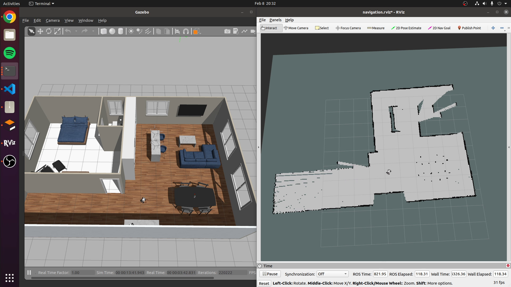
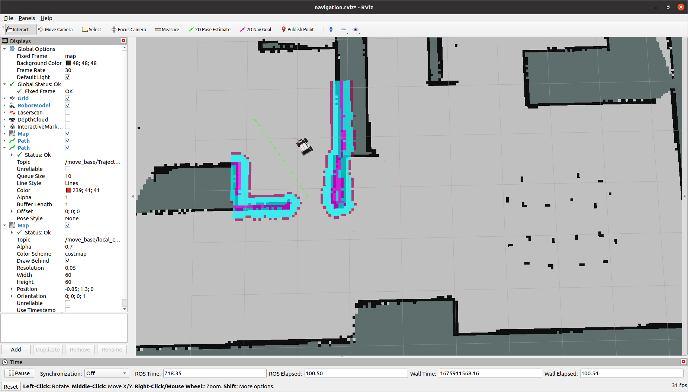

GMapping
This tutorial is using a simulation, but the process would be the same for a real Limo
For navigation to be useful, the robot needs a map of the environment around it. It will use that map for high-level planning. We are going to use Gmapping to create that map. It uses something called SLAM (Simultaneous Localization and Mapping) to create that map. The robot will get data from its sensors (2D lidar). It will use that data to find itself in the current map (Localization), then add any new data to the map (Mapping). It will repeat this loop over and over until a map is complete.
Creating a Map
roslaunch limo_navigation limo_gmapping.launch
This will start gmapping in the terminal. Now you need to drive the robot around the environment. Ideally it will see the same areas multiple times. This will create a better map. See control for how to drive it around.
To monitor the mapping process, you can run RVIZ
roslaunch limo_viz view_navigation

Once your map looks complete, you will want to save it for future use. This command will save a map (yaml and pgm file) in the directory in which it was run
rosrun map_server map_saver
Autonomous Navigation
Once the robot has a map of the environment, it can navigate around it. To start navigation, run one of the commands below depending on how your robot is setup
roslaunch limo_navigation limo_amcl_diff.launch
roslaunch limo_navigation limo_amcl_ackerman.launch
You can optionally pass-in “map_file” as a parameter that points to the map you created. For this tutorial, we will use the included map of the environment by default.
This command will start a map server, amcl and move_base.
- The map server will load the map and make it available through the /map topic
- amcl will take sensor data from the lidar and try to estimate where the robot is in the map. Driving the robot around will improve the accuracy of this estimate
- move_base will take the position estimate from amcl and the map from the map server and it will plan how to get to the requested position (gloabl plan). It will also take sensor data from the lidar to replan around new obstacles (local plan) as it tries to follow the global plan

To send the robot a goal, you can either send a message to the /move_base_simple/goal topic, or you can use the interactive 2D Nav Goal tool in RVIZ. To use the tool in RVIZ, make sure the Global Frame is set to “map”. then select 2D Nav Goal from the top bar. Click in the map to set the position of the goal. Continue holding the mouse and drag the mouse in the direction you want the robot to face when it stops and release the mouse. You should see the global plan appear and the local plan and local map updating as the robot navigates.